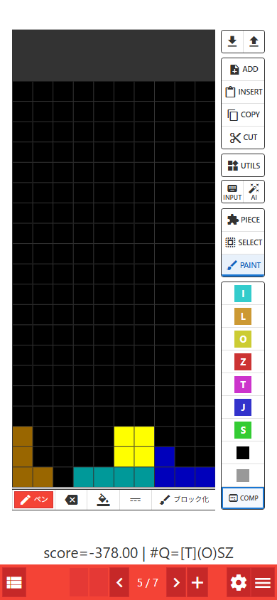
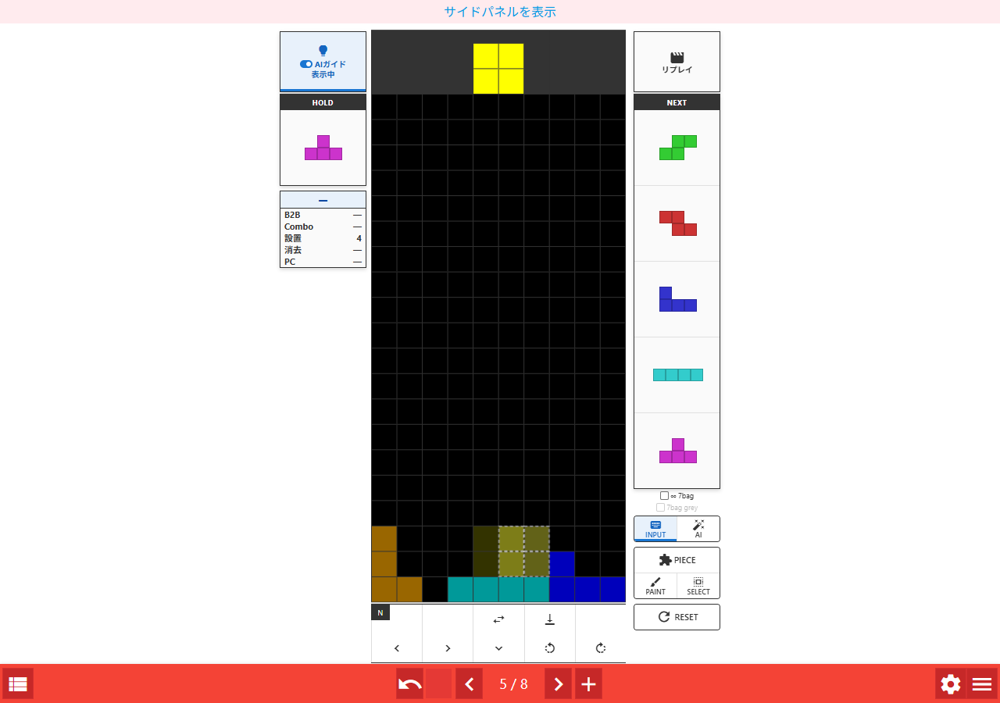
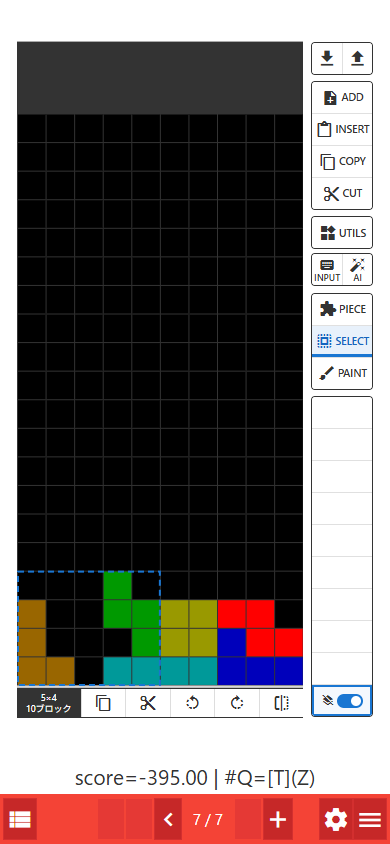
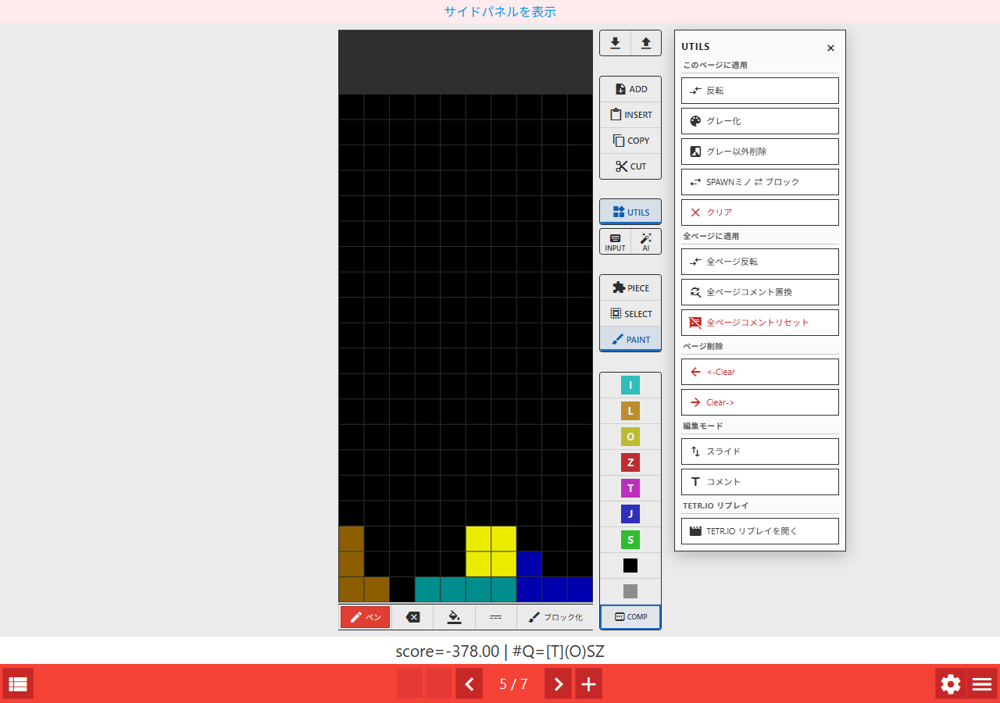
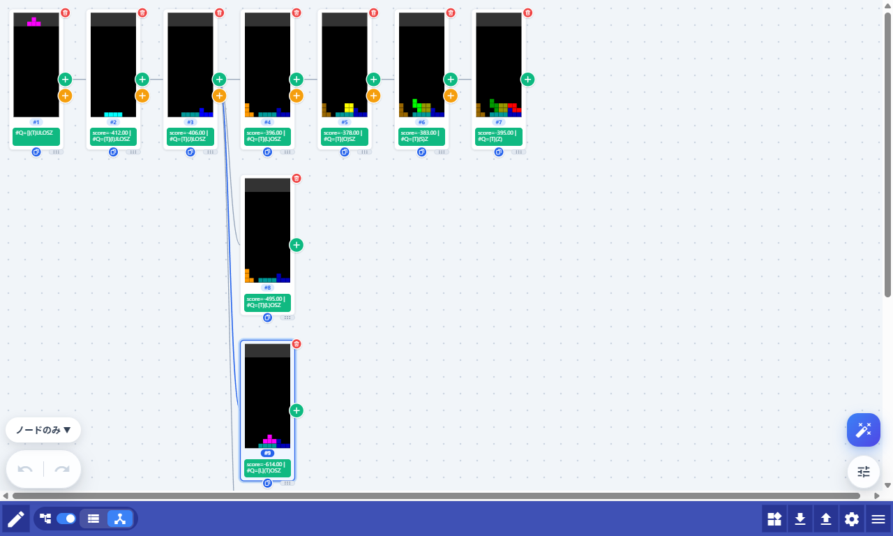
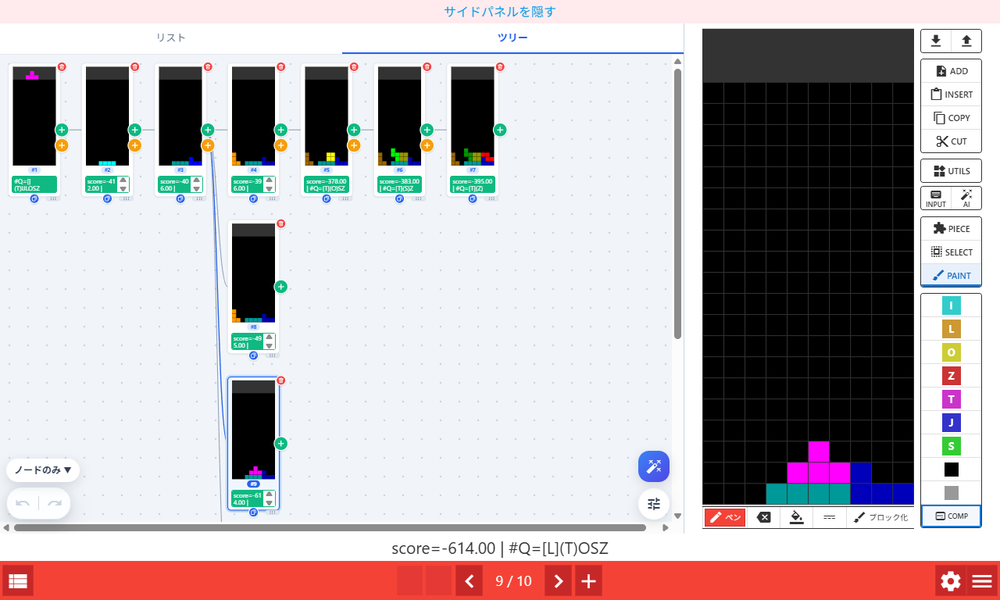
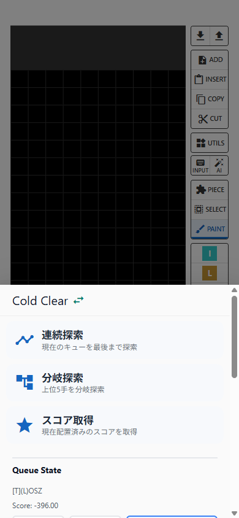

まず使ってみる
このマニュアルは、実装と実画面を基に生成AIを利用して作成・メンテナンスしています。
- Fumen Mobile Forkを開く。
- Edit画面で色を選び、盤面をタップまたはドラッグしてブロックを置く。
- 下部の + で次のページを作る。
- 左下のリストアイコンで全ページを確認する。
- 右下の歯車で設定、メニュー（≡）から取り込み・書き出し、Reload、Helpを開く。
5つの画面を使い分ける
Reader
完成したテト譜を閲覧します。前後ページへの移動、アニメーション再生、コメント確認に向いています。鉛筆アイコンでEditへ移動します。
Edit
盤面、ミノ、コメント、ページを編集します。通常の作業はこの画面から始めます。
List
全ページをカード形式で並べて確認します。並べ替え、コメント編集、画像やURLの出力に向いています。
Tree
同じ局面から複数の手順へ分岐させます。候補手、セットアップ、補完の整理に向いています。
TETR.IO リプレイ
TETR.IOの対戦リプレイ（.ttrm）を再生し、AIで手を評価して、好きな局面をEditへ取り出します。
ツリーモードが有効なときは、一覧画面の下部バーにあるリスト／ツリーのボタンでListとTreeを切り替えます。ツリーを有効にすると、ページ順はツリー構造に合わせて管理されます。PCでは、Editの左側にListまたはTreeをサイドパネルとして表示できます。
盤面を編集する

PAINTで描く
ペン
7色・黒・灰色から選び、タップまたはドラッグでブロックを置きます。色を長押しすると対応するミノを出現させ、PIECEへ切り替わります。
消しゴム
ブロックを消します。設定の消しゴムのドラッグでSPAWNミノも削除するが有効なら、ドラッグが通過したSPAWNミノも削除します。
塗りつぶし・行を塗る
連続した範囲または1行を選択色で塗ります。黒（空）を選ぶと同じ範囲を消去します。
COMP
マスを4つ選び、形からミノを推定して対応色で確定します。長押しすると色付きブロックとSPAWNミノを消し、灰色ブロックを残します。
ミノ ⇄ ブロック
操作トレイのブロック化でSPAWNミノを同じ位置の4ブロックへ変換します。SPAWNミノがないときはミノ化を押し、強調表示された形から1つ選ぶとミノに戻せます。選択中のボタンはやめるになり、もう一度押すと中止します。UTILSのSPAWNミノ ⇄ ブロックやキー割り当て（既定はB）からも実行できます。ブロック化後は固定によるライン消去は行われません。
右側の操作レール
| ボタン | できること | 長押し |
|---|---|---|
| 取り込み （下向き矢印） | クリップボードから挿入・読み込みを行うImport/Exportを開く | — |
| 書き出し （上向き矢印） | データのコピー、画像保存、URLで開く操作を行うImport/Exportを開く | — |
| ADD | 現在ページの直後にページを追加する | — |
| INSERT | クリップボードのテト譜または盤面画像を次ページへ挿入する | 全ページを読み込み内容で置き換える |
| COPY | 現在ページをfumen v115形式でコピーする | 全ページをコピーする |
| CUT | 現在ページをコピーして削除する | 全ページを切り取る |
| UTILS | 反転、グレー化、ページ削除、スライド、コメント、TETR.IO リプレイなどのパネルを開く | — |
| FLAGS | キーページ／参照ページ、固定、せり上がり、反転フラグを切り替えるパネルを開く。設定のFLAGSを表示がオンのときだけ表示 | — |
| INPUT | キューのCURRENTを直接操作するINPUTへ切り替える | — |
| AI | AIメニュー（Cold Clear・Sold Slear）を開く | — |
| PIECE・SELECT・PAINT | 編集モードを切り替える | PIECE：SPAWNミノを削除（INPUTでは盤面とミノをリセット） |
レールの文字が画面の大きさに収まらない場合は、アイコンだけで表示されます。
PAINT・PIECE・INPUT・SELECTを切り替える
| モード | 主な操作 |
|---|---|
| PAINT | ペン、消しゴム、塗りつぶし、行を塗る、ブロック化／ミノ化。パレットはブロック色として表示されます。 |
| PIECE | パレットからミノを出現させ、Hold、ハードドロップ、左右移動、ソフトドロップ、左右回転を操作します。SRS+では180°回転も使えます。左右移動の長押しはDAS・ARRの設定に従って連続移動します。パレットの削除でミノを消し、RESPAWNで出し直します。PIECE中の + は、次ページを作るときに盤面をグレー化します。 |
| INPUT | キューのCURRENTを直接操作します。HOLD・NEXT、配置統計、AIガイド、リプレイボタンを表示します。 |
| SELECT | 盤面をドラッグして矩形選択し、コピー、切り取り、左回転、右回転、反転を行います。 |
選択中のPAINTまたはSELECTをもう一度押すと、盤面下の操作トレイを表示／非表示にできます。非表示の間はせり上がり行を編集できます。トレイが収まらないときは文字をアイコンにまとめ、それでも収まらなければ横スクロールできます。
INPUTで実戦のように操作する

- INPUT：レールのINPUTから開きます。キューのCURRENTを操作し、ハードドロップすると次のページへ進んで次のCURRENTが出現します。NEXTは近いピースから上へ並びます。
- HOLD / NEXT：選ぶとピースキュー設定が開きます。キューはページコメントへ
#Q=[](I)OTLJSZのような形式で保存されます。閉じるときにCURRENTが空ならNEXTの先頭がCURRENTへ移ります。 - 配置統計：HOLDの下に直前のライン消去・Spinと、B2B、Combo、設置、消去、PCを表示します。TETR.IO リプレイから取り出したページでは、攻撃・相殺・送信も表示します。画面の高さに応じて項目は省略されます。
- AIガイド：HOLDの上のボタンでオン／オフします。詳しくはINPUTのAIガイドを参照してください。
- リプレイ：NEXTの上のボタンでTETR.IO リプレイ画面を開きます。
- ∞ 7bag：ランダムな7種1組のキューを自動補充します。オンの間だけ、直下の7bag greyを切り替えられます。
- 7bag grey：7個ごとにページをまとめ、確定したbagの地形をグレー化します。通常コメントは表示せず、キューと進捗は編集用データとして保持します。ツリーモードではINPUT用の作業分岐を保護します。
- RESET：盤面とCURRENTをリセットします。∞ 7bagがオンのときは、新しいランダムキューで最初から始めます。
SELECTで範囲を再利用する

- SELECTを選び、盤面上を始点から終点までドラッグする。
- 操作トレイからコピー、切り取り、左回転、右回転、反転を選ぶ。
- コピーまたは切り取りした範囲はパレットの空き枠へ保存されます。その枠を選び、盤面をタップしてスタンプします。
- 枠を長押しするとパーツをピン留めして保存できます。パレット最下段のスイッチで、スタンプ時に空セルを透過するかを切り替えます。
UTILSとFLAGS

- このページに適用：反転、グレー化、グレー以外削除（SPAWNミノも消去）、SPAWNミノ ⇄ ブロック、クリア。
- 全ページに適用：全ページ反転、全ページコメント置換、全ページコメントリセット。コメントリセットはツリーデータを維持し、Undoできます。
- ページ削除：<-Clearで現在ページより前、Clear->で現在ページより後のページを削除します。
- 編集モード：スライドは盤面を上下左右へ動かすトレイ（上へ + グレー、上、左、右、下、完了）を、コメントは空にする・引き継ぐのトレイを開きます。
- TETR.IO リプレイ：TETR.IO リプレイを開くでリプレイ画面へ移動します。
- FLAGS：キーページ／参照ページ、固定、せり上がり、反転フラグを切り替えます。固定がオンのページでは、次ページへ進むときにライン消去を反映します。
- パネル：見出しをドラッグして移動できます。項目を選ぶと閉じます。ユーザー設定のUTILSメニューを開いたままにするを有効にすると、盤面を操作しながら続けて項目を選べます。
ページとコメントを管理する
前後へ移動
下部の左右ボタンで移動します。長押しすると最初または最後のページへジャンプします。
途中へ追加
次ページがある状態でも + や INSERT を使えます。新しいページは現在ページと次ページの間に入ります。
元に戻す
下部のUndo/Redoで直前の編集を戻したりやり直したりできます。INPUTでNEXTキューを操作しているときは、ミノ1個分の操作をまとめて戻したりやり直したりできます。画面モードをまたぐ編集でも履歴が維持されます。
コメント
盤面下の欄へ説明やNEXTキューを書けます。Listでは全ページを見ながら編集でき、UTILSから全ページの文字列を一括置換できます。
ページローテーション
保持ページ数を設定すると、ページ追加時に上限を超えた古いページ番号から自動で削除します。0は上限なしです。
Listで全ページを整理する
Edit画面左下のリストアイコンから開きます。

- 1回選ぶとそのカードがアクティブになり、アクティブなカードをもう一度選ぶとそのページのEditへ移動します。
- #ページ番号からも対象ページへ移動できます。サイドパネルでは画面を切り替えず、右側のEditだけが更新されます。
- カードをドラッグするとページを並べ替えられます。ツリーモード中は並べ替えできません。
- コメント欄はその場で編集できます。UTILSの全ページコメント置換で全ページの文字列を一括置換できます。
- 下部バーには、Editへ戻る、ツリーモードのスイッチ、リスト／ツリー切替（ツリーモード中のみ）、UTILS、取り込み、書き出し、設定、メニューが並びます。Undo/Redoは左下、表示設定は右下のフローティングボタンです。
- UTILS：Listを離れずに、現在ページの反転・グレー化・クリア、全ページ反転、全ページコメント置換・リセット、ページ削除、TETR.IO リプレイを実行できます。
- 表示設定（右下のボタン）には上部の空白行を省略、ズームのスライダー、すべての設定があります。スライダーは100%付近で自動的にスナップし、%表示をタップすると100%に戻ります。Ctrl+ホイールでも拡大縮小できます。
Treeで手順を分岐管理する
- Listの下部バーにあるツリーアイコン横のスイッチをオンにする。
- 下部バーのツリービューのボタンを選び、Treeへ切り替える。
- 起点にしたいノードを選び、色付きボタンで続きを作る。

追加・移動・削除
| 操作 | クリック | ノードをドラッグして重ねる |
|---|---|---|
| 緑の+ | 選択ノードの続きとしてページを追加 | そのノードの次へ移動 |
| オレンジの+ | 選択ノードから新しい分岐を追加 | 分岐先へ移動 |
| 青の複製（ノードの下） | ノードや分岐を複製 | ドラッグ中は青い+になり、そのノードと同じ親からの分岐として移動 |
| 「ページを削除」（右上） | 「移動/削除」で選んだ範囲を削除。直後の通知からUndo可能 | — |
- ドラッグ：ノード下の「ドラッグして移動」のつまみからドラッグを始めます。
- 移動/削除：左下のチップで「ノードのみ」「ノードと配下」「配下のみ」を選びます。移動と削除に同じ範囲が適用されます。
- 配下のみ：ノードを残して子孫だけを移動・削除します。緑ボタンは直下の子が1つのときに使えます。移動先が葉ノードの場合に限り、複数の子サブツリーも順序を保ったまま移動できます。
- 削除：各ノード右上の「ページを削除」アイコンを選びます。削除後に表示される通知の元に戻すで復元できます。最後の1ページは削除できません。
- ノード選択：1回選ぶとアクティブになり、アクティブなノードをもう一度選ぶとそのページのEditへ移動します。
- ツリーモードの解除：ツリー構造が削除されるため、確認ダイアログが表示されます。解除はUndoで元に戻せます。
- 親ツリー追加：点線の+カードで、既存の枝につながらない独立したルートを作ります。別セットや別巡目を同じテト譜で管理するときに使います。
- 表示設定：右下のボタンから、上部の空白行の省略、+ボタンでグレー化、ズームを切り替えます。+ボタンでグレー化は、+でページを作るときにライン消去後のブロックをグレーにします。
- AI：右下の青いAIボタンから、選択ノードを起点にAIメニューを開けます。
- ルートから選択ページまで：書き出し時に、ルートから選択中ノードまでのページだけを対象にできます。
#TREE=... として保存されます。ツリー利用中はこの文字列を削除・書き換えないでください。他のテト譜ツールで開くと、この文字列が通常コメントとして見える場合があります。PCのサイドパネルを使う
PCではEditを開いたまま、左側にListまたはTreeを表示できます。盤面を編集しながらページ全体や分岐を確認したいときに便利です。

- 画面最上部の サイドパネルを表示 を選ぶ。ユーザー設定の「リスト/ツリー」→「サイドパネルを表示（PC）」からも切り替えられます。
- リストまたはツリータブを選ぶ。
- カードやノードを選び、右側の盤面を編集する。コメントと現在ページも相互に同期します。
- リストタブ：ページ移動、コメント編集、ドラッグ並べ替えができます。ツリーモード中は並べ替えできません。
- ツリータブ：ツリーモードを有効にするでツリーを有効化し、ノード追加・分岐・複製・削除、移動・削除範囲の選択、ページ移動ができます。
- パネル内のボタン：左下にUndo/Redo（ツリータブでは移動・削除範囲のチップも）、右下に表示設定、ツリータブでは表示設定の上にAIボタンがあります。表示設定にはフル画面と同じズームスライダーがあります。
- 幅の変更：パネル右端の区切り線をドラッグします。区切り線をダブルクリックすると自動幅へ戻ります。
- 表示条件：PC用機能です。画面幅が1024px未満になると自動的に隠れ、幅を戻すと再表示されます。
AIで盤面を分析する
AIメニューでは、Cold Clearと、TETR.IO Season 2のルール向けに開発中のSold Slearの2つのエンジンを使えます。
- EditのレールのAI、またはTreeの青いAIボタンを選ぶ。
- Hold、Current、Next、B2B、Comboを現在の状況に合わせる。
- 探索条件を確認し、目的に合う探索を実行する。

3つの探索
連続探索
設定したキューの最後までAIの手順を続きのページとして追加し、Treeへ切り替えます。まず結果を1本見たい場合に向いています。
分岐探索
上位候補を分岐としてTreeへ追加します。複数の候補手を比較したい場合に使います。
スコア取得
キューのCURRENTと同じミノを接地させたページで実行し、その配置をAIに評価させます。結果はコメントへ score=… として書き込まれ、終了後はPAINTに戻ります。
探索を実行すると、ツリーモードが自動で有効になります。
キューの入力
- Hold、Current、Nextの欄を選び、I O T L J S Z ボタンで入力できます。Currentを変えると盤面のミノも出し直されます。
- クリアは現在選択中の欄を消します。
- +1bagはNextへ7種1組を追加します。
- B2B：現在のBack-to-Back状態を指定します。Combo：現在のCombo（REN）数を指定します。
- 入力内容は閉じるまたは探索開始時にページコメントへ書き込まれ、Undoできます。コメントがキュー形式でないページでは、コメントを削除してキューを編集するを選んでから入力します。
探索設定
| 設定 | 意味 | 目安 |
|---|---|---|
| Hold使用 | 探索中にHoldを許可する（Cold Clear） | 実戦に合わせるならオン |
| NEXT制限 | AIへ渡す既知NEXT数を制限する（Cold Clearは0〜30、Sold Slearは1〜30） | 見えているNEXTだけで比較したいときに使用 |
| 思考時間 | 1手あたりの探索時間を100ms・200ms・500ms・1s・2sから選ぶ（Cold Clear） | まず1s。速度優先なら短く、精度優先なら長く |
| 重み | 評価戦略をDefaultまたはFastから選ぶ（Cold Clear）。FastはTスピンより掘りやRENを選びやすい | 通常はDefault |
| Speculate | 既知キューより先のピースを推測して探索する（Cold Clear） | NEXTが短い状況で候補を広げる |
| 探索量 | 標準（固定量で毎回同じ手を返す）または100〜2000msから選ぶ（Sold Slear） | まず標準 |
| 上位候補数 | 分岐探索で残す候補数（Cold Clearは1〜20、Sold Slearは1〜16） | 候補を増やすほど処理と結果量が増える |
探索中は同じメニューの探索停止で中断できます。進行状況はAIボタンにも表示されます。探索中は設定を変更できません。
Sold Slear
- メニュー見出しのエンジン名（Cold Clear ⇄）を選ぶとSold Slearに切り替わります。選んだエンジンは、INPUTのAIガイドとリプレイのAI解析でも使われます。
- SRS+・180°回転・all-spinを前提にした開発中のボットです。キックテーブルがSRS+以外のときは、提案手に到達できない場合があることが表示されます。
- NEXTが1個以上必要です。スコア取得では、候補の中での順位を通知で表示します。
INPUTのAIガイド
- INPUTでHOLDの上のAIガイドを選ぶとオン／オフが切り替わります。オンにすると、CURRENTの最善手を半透明のブロックと点線枠で盤面に表示します。
- ボタンにはOFF、待機中、計算中…、表示中の状態が表示されます。1手置くたびに再計算し、Holdしても表示中のガイドは固定するまで同じ位置に残ります。
- 使用できない局面では、キューなし、ミノ不一致、フラグ非対応、NEXT不足、消去待ち、候補なし、プレビュー中、AIエラーなどの理由が赤字で表示されます。
- AIメニューのエンジン、Hold使用、NEXT制限、思考時間などの設定と、コメントのB2B・Comboを使って計算します。
ユーザー設定を調整する
Edit右下の歯車、またはメニューのSettingsから開きます。
| タブ | 主な設定 |
|---|---|
| 編集 | 消しゴムのドラッグでSPAWNミノも削除する、PAINTパレットをミノ画像で表示、FLAGSを表示、+ボタンでグレー化、ブロック表面のマーク |
| リスト/ツリー | 上部の空白行を省略、+ボタンでグレー化、サイドパネルを表示（PC） |
| INPUT | ゴースト表示、キックテーブル、ARR・DAS・DCD・SDF、ソフトドロップ優先、7bagグレー |
| キー割り当て | ショートカットラベル表示、ピースコントロール、パレットショートカット、編集用ショートカット |
| 全般 | ページ移動のループ、初期画面、ページローテーション、UTILSメニューを開いたままにする |
- ショートカットラベル表示：各ボタンの右下に割り当てキーを表示します。
- キーの変更：対象欄を選んでキーを押します。Backspaceで割り当てを解除できます。
- キックテーブル：「クラシック」「SRS」「SRS+」から選びます。SRS+では180°回転も利用できます。Spinの判定もキックテーブルに従います。
- ARR・DAS・DCD・SDF：PIECEとINPUTの左右移動とソフトドロップの速さを調整します。ARRを0にすると端まで即移動します。
- 7bagグレー：INPUTの盤面横にある7bag greyと同じ設定です。INPUTで∞ 7bagを使うときに働きます。
- FLAGSを表示：オンにすると、レールのUTILSの隣にFLAGSが表示されます。
- PAINTパレットをミノ画像で表示：オンにすると、PAINTの色見本を対応するミノ画像で表示します。PIECEのパレット表示には影響しません。
- 初期画面：起動時に開くReader・Edit・List・Tree画面を選びます。ツリーデータ(#TREE)を含むテト譜はTree画面で開くがオンなら、ツリー付きのテト譜はTreeで開きます。
- +ボタンでグレー化：編集とリスト/ツリーのどちらのタブから変更しても同じ設定へ反映されます。
- AIの設定：エンジンや思考時間などはAIメニューで設定し、ブラウザ内に保存されます。
- 設定の保存：ブラウザ内に保存されます。ブラウザデータを削除すると初期化されます。
覚えておくと便利な操作
| 操作 | 結果 |
|---|---|
| 前・次ページを長押し | 最初・最後のページへ移動 |
| リストアイコンを長押し | ツリーモードを有効にしてTreeへ移動 |
| メニューを長押し | 新しいテト譜を作成 |
| PIECEを長押し | 盤面上のSPAWNミノを削除（INPUTでは盤面とミノをリセット） |
| 選択中のPAINT・SELECTをもう一度押す | 盤面下の操作トレイを表示／非表示 |
| 色を長押し | 対応ミノをSPAWN |
| 黒を長押し | 盤面全体を空にし、SPAWNミノも消去 |
| 灰を長押し | 色付きブロックをすべて灰色にする（空マスはそのまま） |
| COMPを長押し | 色付きブロックだけを空マスにし、灰色ブロックを残す。SPAWNミノも消去 |
| 盤面を右クリック | PAINT・PIECE・SELECTのどれでも消しゴムとして働き、右ドラッグで続けて消せる。塗りつぶし・行を塗るを選んでいるときはその範囲を消去。SPAWNミノを右クリックするとキューの先頭に戻す。選択やパーツのプレビューを右クリックすると、まるごと削除して選択も解除 |
| PIECEのHold | HOLDとカレントを入れ替え、ページコメントのキューも更新 |
| SPAWNミノ ⇄ ブロック | 操作トレイ、UTILS、または割り当てたキー（既定はB）で相互変換 |
| メニューのReload | キャッシュを消去して、更新されたアプリ資産を読み直す |
困ったとき
ページを並べ替えられない
ツリーモード中はListのドラッグ並べ替えが無効です。ツリー構造を維持したままTreeでノードを移動するか、ツリーモードを解除してください。
AIを実行できない
Queueが空でないか確認してください。スコア取得では、CURRENTと同じミノを接地させたページが必要です。探索中やリプレイのAI解析中は、別の探索を開始できません。
AIガイドが出ない
AIガイドのボタンに表示される理由を確認します。キューのコメントがない、CURRENTと盤面のミノが違う、消去されていない完成行がある、といった局面では表示されません。
リプレイを読み込めない
2人対戦の.ttrmファイルか確認してください。読み込めない場合は、画面に失敗の理由が表示されます。
画像を読み込めない
画像がクリップボードにコピーされていること、盤面のマス目に沿っていることを確認します。余白や文字を減らして再度範囲選択してください。
ツリーが消えた
1ページ目コメントの #TREE=... が残っているか確認します。削除後に保存や共有を行った場合、元のツリーデータは復元できないことがあります。
設定が戻った
設定はブラウザ内に保存されます。キャッシュやサイトデータの削除、別ブラウザ・別端末では引き継がれません。
共有相手と見え方が違う
共有URLを開き直し、キックテーブル、「上部の空白行を省略」、ツリーモードなどが意図どおりか確認してください。